ИИ. Новая реальность · очный поток 7 · занятие 6 · 24 ноября 2026
Визуал без дизайнера
Презентации, сайты и изображения в своём стиле.

ИИ. Новая реальность · очный поток 7 · занятие 6 · 24 ноября 2026
Презентации, сайты и изображения в своём стиле.
Выберите своё предложение, проект или продукт. Его можно взять сразу в несколько практик.
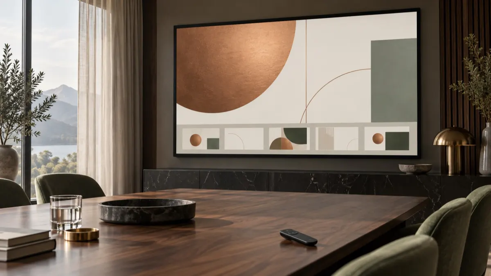
 Быстрая презентация
Быстрая презентацияКороткий запрос нужен после выбора оформления.
Выберите встроенный стиль по миниатюре.
В примере — 10 слайдов о кофейне «Тепло» и три идеи для бизнес-клуба.
Откройте обложку и следующий слайд. Сверьте оформление с выбранной миниатюрой.
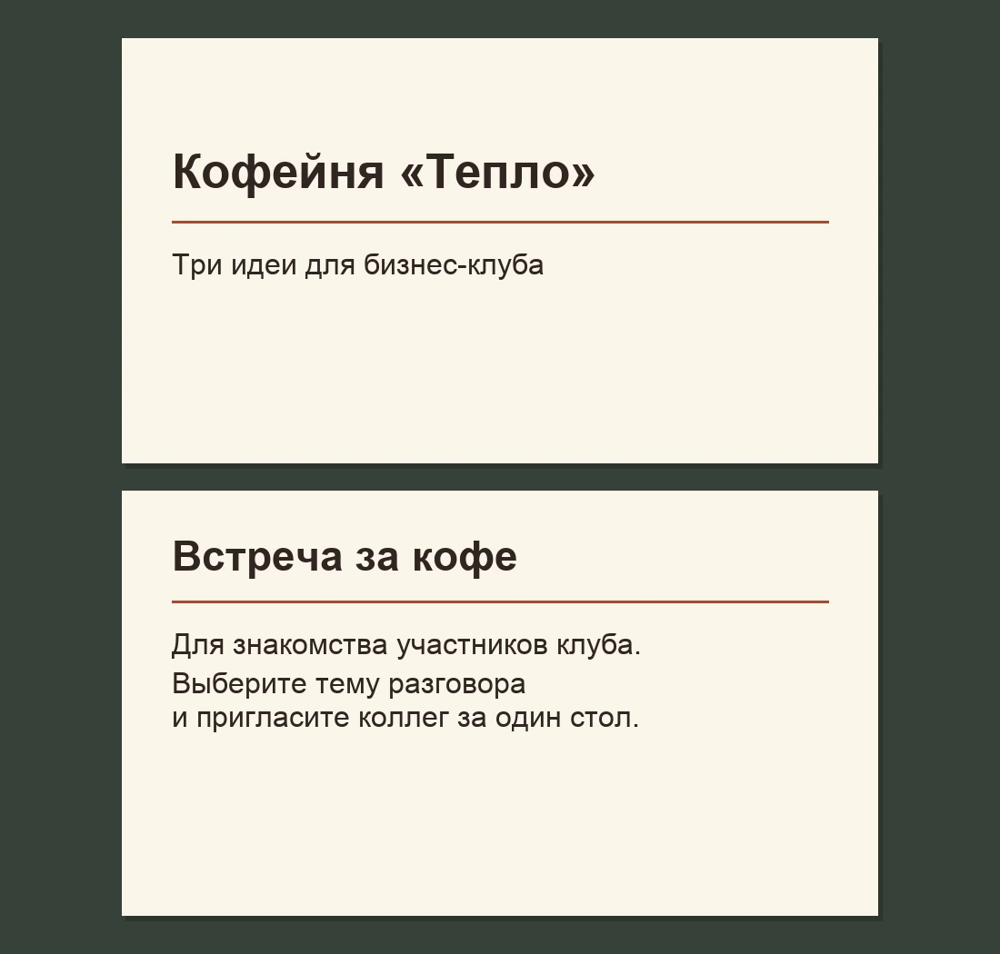
 Быстрая презентация
Быстрая презентацияТа же кофейня. Оформление уже вписано в отдельный промпт.
Скопируйте целиком запрос для ChatGPT из шпаргалки.
Молочный фон, тёмный Arial, терракотовая линия. Заголовки выровнены слева.
Откройте файл и проверьте обложку и внутренний слайд по образцу.
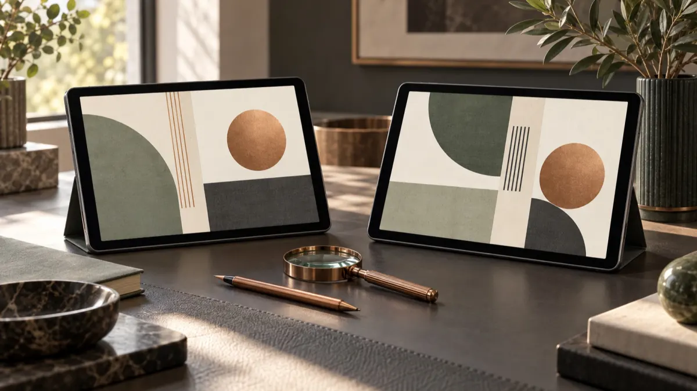
Практика 02
Возьмите понравившуюся презентацию. Её оформление можно применить к своему документу.
Готовая практика обратного промптинга.
Возьмите обложку и внутренние страницы, на которых хорошо виден стиль.
Промпт извлекает палитру, шрифты, отступы, фон и характер иллюстраций.
Либо выберите уже готовое описание в библиотеке из 18 стилей.
Договор, описание услуги или страница сайта могут стать источником презентации.
Загрузите документ или вставьте ссылку.
В настройках задайте язык и вставьте извлечённый стиль.
Сравните факты с документом, оформление — с образцом.
Выберите подход из вашей библиотеки NotebookLM.
Соберите обзор из источников по одной теме.
Отметьте конкретные документы перед генерацией.
Получите обзор в чате. Сохраните заметку и используйте её текст как источник нового блокнота.
Заранее определите, что зритель увидит и в каком порядке.
О чём презентация? Для кого? Что должно произойти после показа?
На каждый слайд — короткий заголовок и 2–4 тезиса.
Один слайд исходника на один слайд презентации. Вставьте описание стиля и сверьте результат.
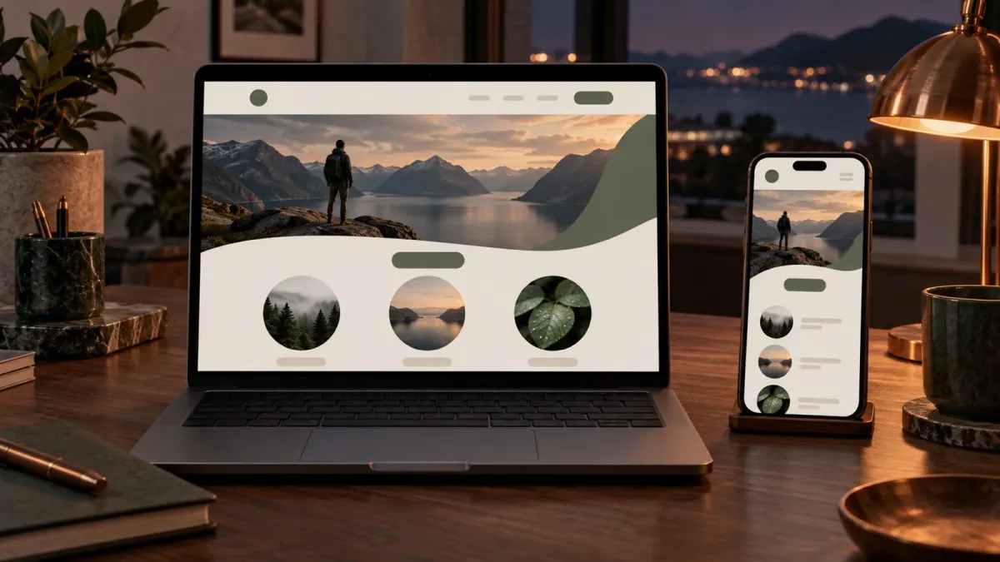
СайтПрактика 03
Понравилась страница? Разберите её оформление и соберите свой сайт со своим предложением.
СайтПолный скриншот показывает ритм страницы. Крупные фрагменты помогают рассмотреть детали.
Выберите референс и откройте сам сайт из галереи.
Используйте GoFullPage. Для длинного сайта подойдут 3–4 отдельных экрана.
Отправьте скриншоты и готовый промпт в ChatGPT. Сохраните описание сетки, цветов, кнопок и фото.
СайтФайл о бизнесе + описание стиля → готовое превью.
Приложите документ и вставьте промпт сборки.
Читателю видно, что вы предлагаете и куда нажать.
Те же исходники можно передать в папку проекта.
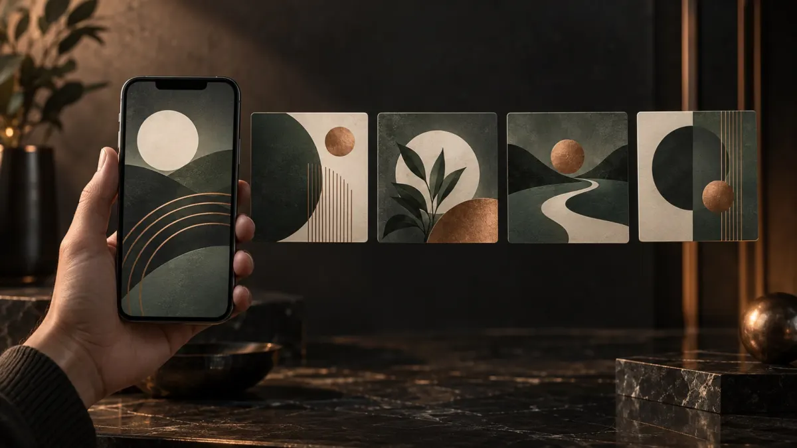
КарусельПрактика 04
Вы задаёте тему и число карточек. Промпт подбирает оформление и собирает серию.
КарусельУ обложки, внутренней карточки и финала разные задачи. Сетка и палитра связывают их.
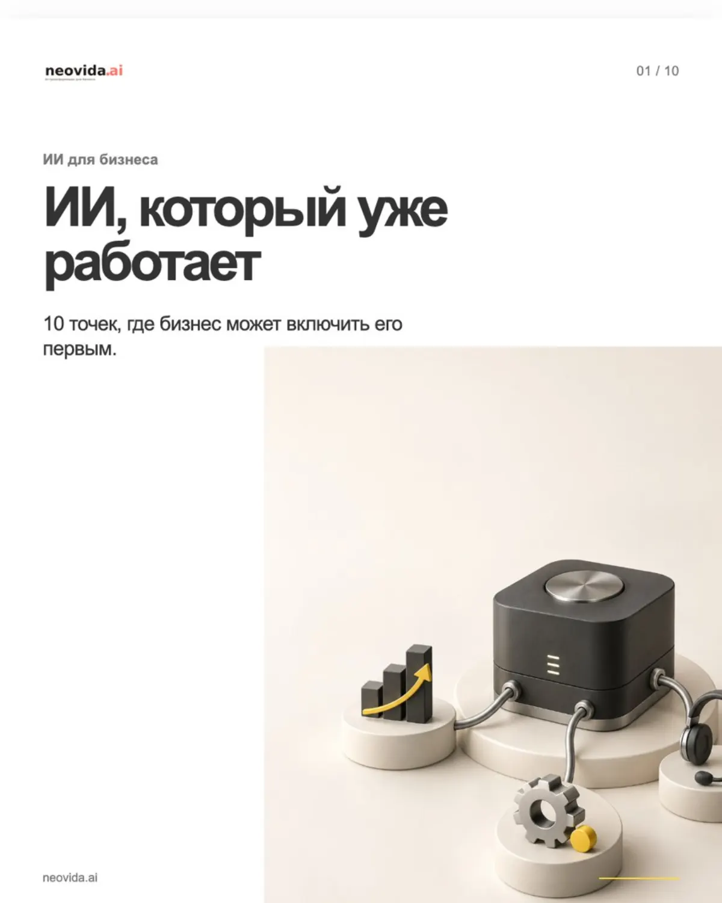

 Карусель
КарусельГотовый промпт сам выберет оформление под тему.
В новом чате прикрепите файл промпта через «+» или вставьте его текст.
Тема — «Как выбрать худи, которое не сядет после стирки». Сделай всю карусель сразу: 5 карточек.
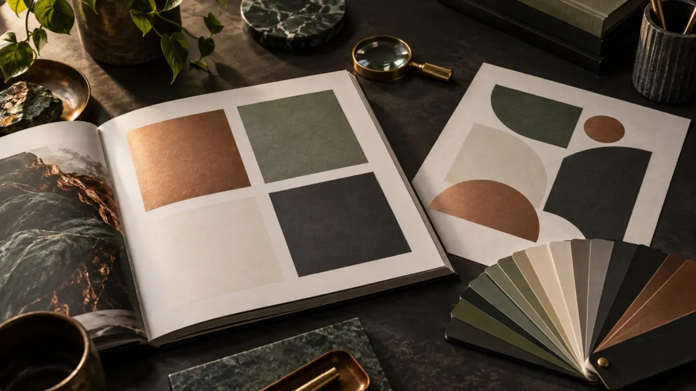
Дизайн-системаПрактика 05
Один раз разберите свои материалы. Используйте результат в следующих визуальных задачах.
Дизайн-системаВход — 18 скриншотов и логотип. Справа — лист стиля, собранный по этим материалам.

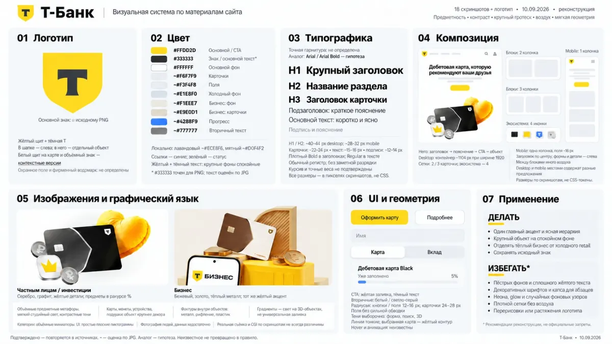
Дизайн-системаПроверить его работу можно глазами и в следующем проекте.
Сопоставляет несколько материалов, фиксирует роль цветов, сетку, шрифты и характер фото.
Различает подтверждённое, предполагаемое и неизвестное. Приблизительный цвет помечает отдельно.
Лист стиля для человека и согласованный JSON для повторного использования.
Дизайн-системаУкажите рабочую папку с материалами и файл с инструкцией.
Положите образцы, логотип и гайдлайн, если он есть. Рядом — vizualny-standart.txt.
«Прочитай brand/vizualny-standart.txt и выполни его по материалам из папки brand». Полная команда — в шпаргалке.
Откройте лист стиля и JSON. Сопоставьте их с исходниками. Сохраните правило работы со стандартом в AGENTS.md.
Дизайн-системаДля тренировки можно взять материалы Т-Банка. Для своего дела выберите направление по образцу.
Откройте превью и возьмите готовое описание.
Сделайте обложку и внутреннюю карточку.
Положите эти образцы и правила в первый гайдлайн.
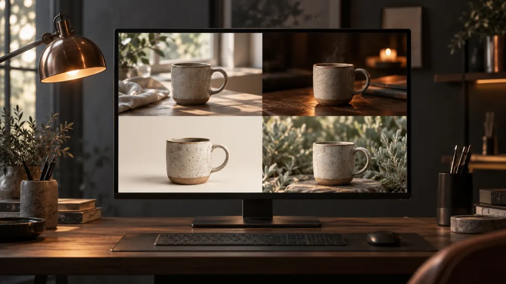
ИзображенияПрактика 06
От голосового замысла до снимка, карточки товара и короткой анимации.
ИзображенияРасскажите задачу голосом → попросите подробный промпт → запустите генерацию.

 Изображения
ИзображенияПриложите своё фото и снимок вещи. Задайте сцену и попросите сохранить лицо и пропорции.
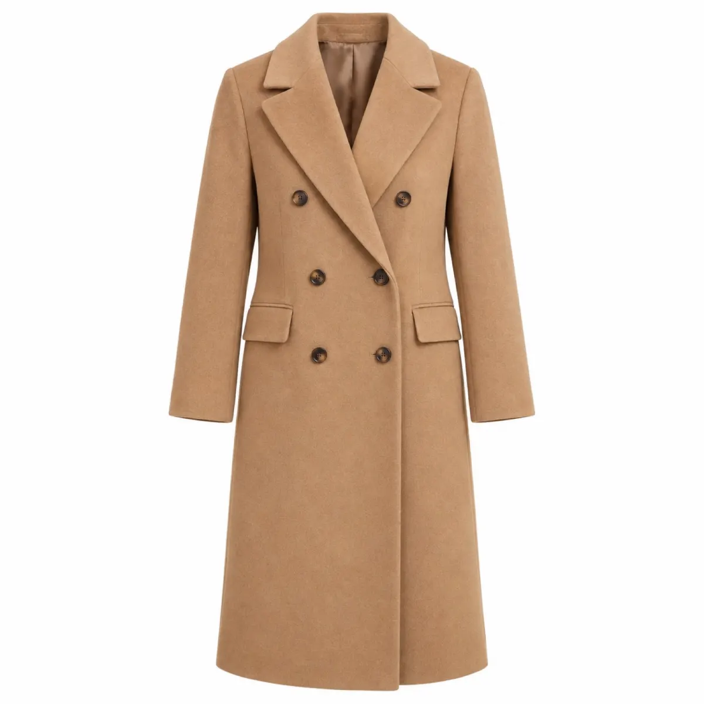
 Изображения
ИзображенияОдно фото можно превратить в журнальную обложку, а историю о бизнесе — в разворот.

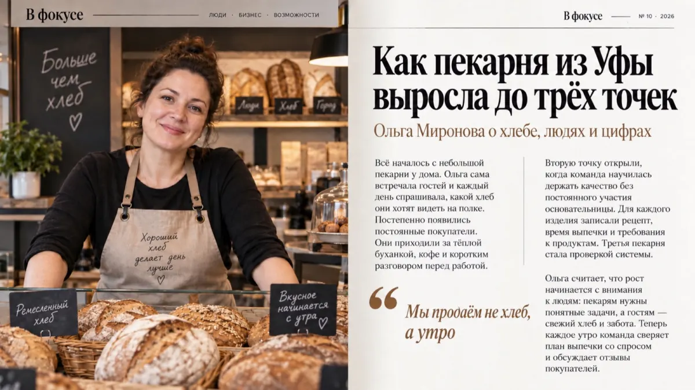
ИзображенияПопросите сохранить расположение объектов на рисунке. Отдельно задайте материалы и свет.

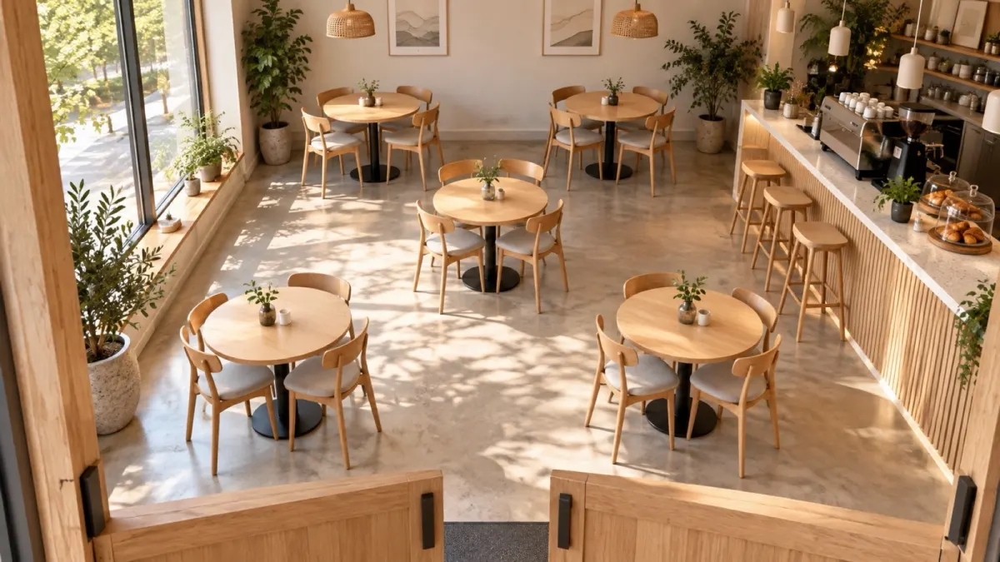
ИзображенияПоменяйте окружение и свет. Сверьте форму, этикетку и цвет товара.
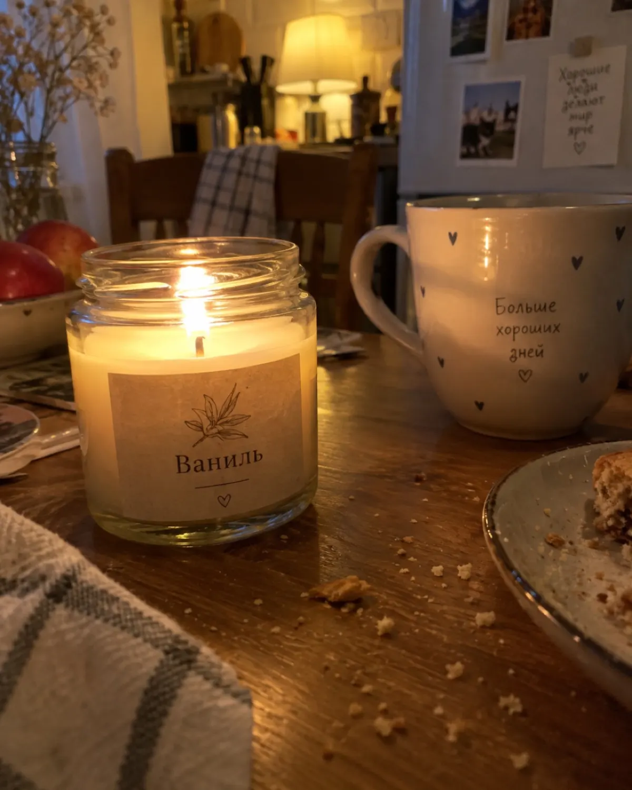
 Изображения
ИзображенияМеняйте по одному условию. На каждом шаге проверяйте, что сохранилось.
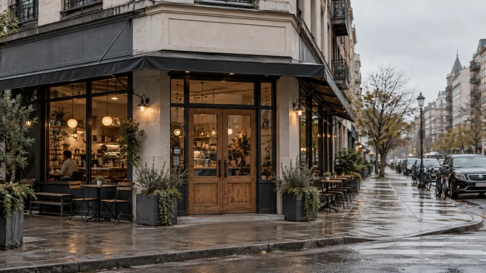
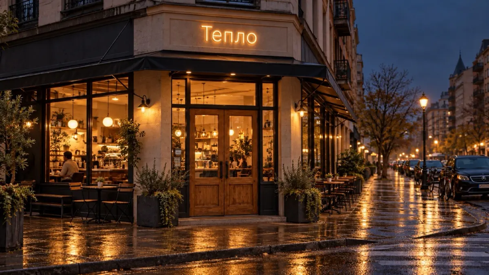
 Изображения
ИзображенияВ ChatGPT Images 2.6 можно попросить оживить изображение.
Например, в окнах постепенно загорается свет.
Камера неподвижна. Вывеска, текст и форма здания сохраняются.
Первый и последний кадры должны стыковаться.
ИзображенияВ шпаргалке для каждого примера есть исходный промпт.
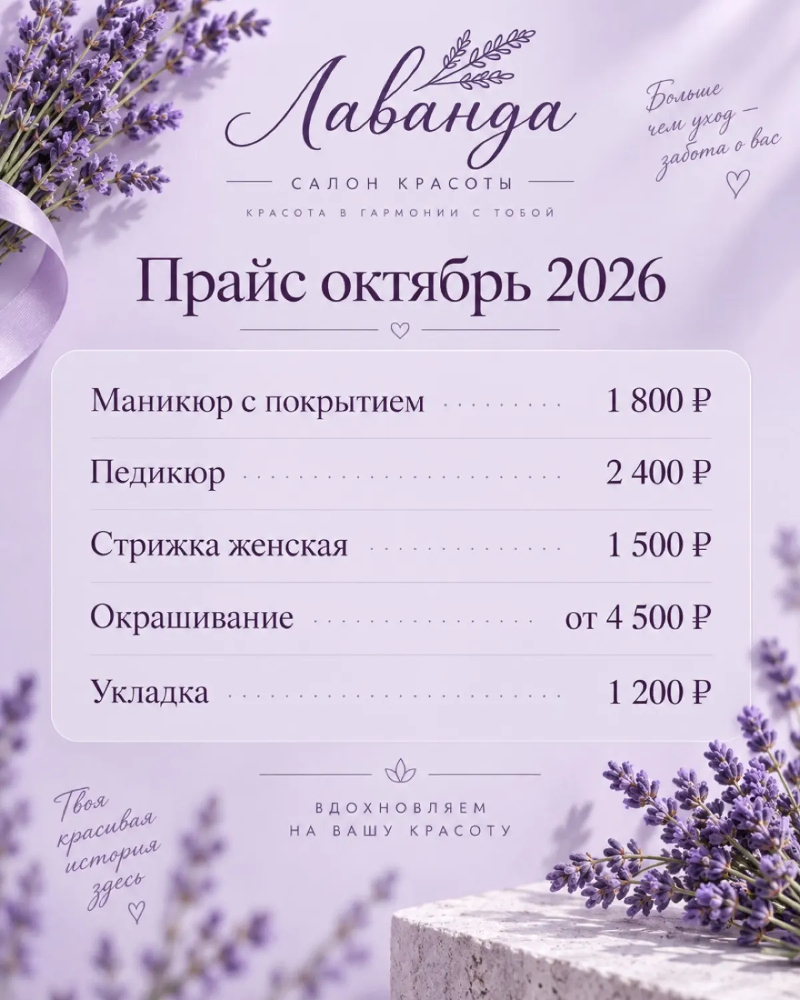

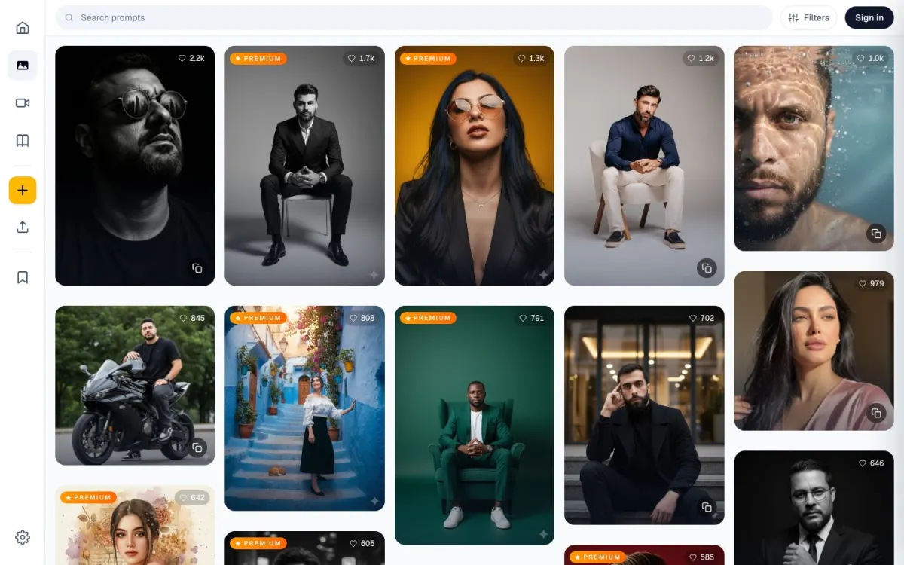
ИзображенияГалерея Banana показывает результат. Библиотека из 112 команд помогает менять отдельные свойства кадра.
Выберите нужный эффект по картинке.
Замените объект, сцену или формат в промпте.
Добавьте одну команду и посмотрите, что она изменила.
Выберите задачу. Нажмите на сервис, чтобы открыть его сайт.
 Kling AI ↗Оживить фотоКредиты, с водяным знаком$10/мес.Standard, US App Store
Kling AI ↗Оживить фотоКредиты, с водяным знаком$10/мес.Standard, US App Store Seedance ↗Снять сцену по референсуДо 120 кредитов в день¹$15/мес.Dreamina Basic, продление
Seedance ↗Снять сцену по референсуДо 120 кредитов в день¹$15/мес.Dreamina Basic, продление Higgsfield ↗Поставить движение камеры1 генерация одновременно$19/мес.Starter, помесячная оплатаHeyGen ↗Записать видео с аватаромДо 3 видео в месяц$29/мес.Creator, помесячная оплатаElevenLabs ↗Озвучить текст10 000 кредитов в месяц$6/мес.Starter, продление
Higgsfield ↗Поставить движение камеры1 генерация одновременно$19/мес.Starter, помесячная оплатаHeyGen ↗Записать видео с аватаромДо 3 видео в месяц$29/мес.Creator, помесячная оплатаElevenLabs ↗Озвучить текст10 000 кредитов в месяц$6/мес.Starter, продлениеИИ. Новая реальность · очный поток 7 · занятие 6
Все промпты, примеры, файлы и тарифы собраны в шпаргалке.